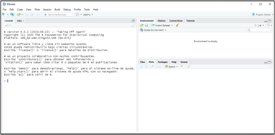
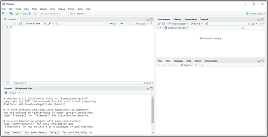

1 Introducción.

Figura 1.1. La distribución Normal…
1.1  De los datos a la información: la analítica de datos.
De los datos a la información: la analítica de datos.
Vivimos rodeados de datos. Las administraciones públicas los recopilan para diseñar políticas; las empresas los generan en cada transacción; los mercados financieros los emiten segundo a segundo. Pero los datos, por sí solos, no son más que registros en bruto: cifras de ventas, cotizaciones, respuestas a una encuesta, indicadores macroeconómicos. Su verdadero valor aparece cuando somos capaces de transformarlos en información que sirva de base para la toma de decisiones.
Un gestor público quiere saber si una política de empleo está funcionando; una empresa aspira a anticipar la demanda o a conocer mejor a su competencia; un emprendedor necesita saber cómo es el sector en el que pretende entrar. En todos estos casos el punto de partida son datos, y el objetivo, extraer de ellos información fiable.
La ciencia que se ocupa de este tránsito del dato a la información es la Estadística, una ciencia instrumental que dota al resto de disciplinas de herramientas para recopilar datos de forma sistemática, organizarlos y extraer de ellos información relevante. Como señalan Mood and Graybill (1963):
“La Estadística es la tecnología del método científico.”
La explotación de los datos y su conversión en información es lo que hoy se conoce como analítica de datos (data analytics). Este libro se sitúa precisamente en ese terreno, aplicado a problemas de naturaleza económica y empresarial: el análisis del entorno en el que operan las empresas.
Para llevar a cabo esta analítica, además de los datos y de los conocimientos metodológicos, resulta imprescindible contar con un software adecuado. En nuestro caso, la herramienta elegida es R.
1.2  ¿Qué es R y cómo nos ayuda a analizar datos?
¿Qué es R y cómo nos ayuda a analizar datos?
R no es una aplicación al uso, sino todo un lenguaje de programación orientado principalmente a la analítica de datos, sobre todo desde una perspectiva estadística. Se distribuye como software libre y gratuito, y es multiplataforma, rasgos que han facilitado su difusión y el surgimiento de una comunidad muy activa de usuarios y desarrolladores.
R nos ofrece un ecosistema idóneo para cubrir todas las etapas de un proyecto de analítica de datos: desde la importación y depuración de los datos, pasando por su exploración gráfica y descriptiva, hasta la estimación de modelos y la presentación de resultados.
¿Y si nunca hemos programado? No hay de qué preocuparse. En este libro, buena parte del código está empaquetado en las funciones del paquete MATlite, de modo que cada paso del análisis se resuelve con una sola línea. Nuestro esfuerzo se concentrará en lo verdaderamente importante: plantear bien el análisis e interpretar sus resultados.
1.3  Instalación de R y RStudio.
Instalación de R y RStudio.
Instalar R resulta sencillo: basta con acudir a la web de CRAN (Comprehensive R Archive Network), descargar la última versión disponible para nuestro sistema operativo (en este manual, Microsoft® Windows®) y ejecutar el archivo descargado, que completará la instalación.
R arrastra, eso sí, una limitación: el programa a través del cual interactuamos con el lenguaje resulta muy poco amigable. Para salvar este inconveniente utilizaremos RStudio, un entorno de trabajo (IDE) desarrollado por Posit® Software. También es gratuito, así que de nuevo bastará con visitar la web de RStudio y descargar e instalar la versión libre de coste.
Importante: hay que instalar los dos programas, primero R y después RStudio. A partir de ese momento trabajaremos siempre desde RStudio, que utiliza R “por debajo”.
1.4 R y RStudio. Comienzo: Proyectos.
Con R y RStudio ya instalados, podemos ponernos manos a la obra. Abriremos RStudio pulsando en el icono correspondiente y aparecerá la siguiente ventana:

Figura 1.2. IDE de RStudio.
La parte izquierda de la ventana es la consola: la sección de RStudio desde la que manejamos R introduciendo código directamente. Escribamos, por ejemplo, 2+2 después del cursor (signo “>”) y pulsemos Enter. La propia consola nos devolverá el valor 4:
2+2## [1] 4Con todo, la forma más eficiente de trabajar es mediante proyectos y scripts.
Un proyecto se asocia, en esencia, a la carpeta en la que R trabajará: allí buscará los datos que le sirven de input y allí depositará, llegado el caso, los resultados u output. Al abrir un proyecto desde RStudio le estamos indicando al programa que busque de forma preferente en esa carpeta todos los archivos que necesite y que guarde en ella lo que vaya generando. Así evitaremos el error más frecuente de quien empieza con R: que el programa “no encuentre” el archivo de datos.
Para crear un proyecto nuevo seguiremos la ruta File → New Project. El programa nos preguntará entonces si deseamos crearlo en una carpeta nueva o en una ya existente. Situémoslo, por ejemplo, en una carpeta llamada “explora”, que ya tenemos preparada. Aparecerá una ventana para localizar la carpeta y, una vez encontrada, pulsaremos Open y Create Project. El proyecto ya está creado.
Si ahora abrimos el explorador de Windows® y buscamos la carpeta “explora”, veremos en ella un archivo del mismo nombre, identificado con el icono de un cubo con una “R”. Ese archivo actúa como un faro: le indica a R que, mientras trabajemos en el proyecto “explora”, encontrará en esa carpeta todos los datos que necesite y que en ella deberá depositar los ficheros de salida que produzca.
En sesiones posteriores, para retomar el mismo proyecto ya no recurriremos a File → New Project, sino a File → Open Project (o, sencillamente, haremos doble clic sobre ese archivo).
1.5 Scripts.
Los scripts, por su parte, son programas o rutinas en los que varias instrucciones se ejecutan de forma secuencial. Para crear uno seguiremos la ruta File → New File → R Script. ¿Y dónde se guardará? En la carpeta “explora”, la del proyecto en el que estamos trabajando.
Observaremos que en la parte izquierda de RStudio ha surgido una ventana nueva, situada arriba, que desplaza la consola hacia abajo. Es la ventana del editor:

Figura 1.3. El editor de Scripts de RStudio.
Empecemos a escribir nuestro script. Cuando queramos introducir un comentario que no ejecute instrucción alguna, lo precederemos del símbolo almohadilla o hashtag “#”. A continuación pediremos a R que realice la suma 2+2. Escribimos, por tanto, en el editor:
#Ejemplo de Script
2+2 #este script hace una simple suma.Para ejecutar la línea en la que se encuentra el cursor bastará con pulsar Control + ENTER o el botón Run; y si queremos ejecutar varias líneas, las seleccionaremos previamente y emplearemos esas mismas opciones. Para ejecutar el script completo, Control + Mayúsculas + ENTER. En la consola aparecerá:
## [1] 4Guardaremos el script con File → Save As…; y, de nuevo, el destino predeterminado será la carpeta “explora”, la de nuestro proyecto. Llamémoslo, por ejemplo, “explorando”. En la carpeta del proyecto encontraremos un archivo de texto llamado “explorando.R”. Podremos ejecutarlo cuantas veces queramos sin necesidad de teclear nada, o modificarlo si necesitamos introducir cambios. Ahí reside, precisamente, la ventaja de trabajar con scripts.
En las prácticas de este libro no tendremos que escribir los scripts desde cero: cada capítulo ofrece, en su última sección, el script de la práctica listo para descargar. Bastará con guardarlo en la carpeta del proyecto y abrirlo con File → Open File….
1.6 Funciones.
R trabaja fundamentalmente con datos y funciones. Pero ¿qué es exactamente una función?
Una función es un conjunto o sistema de instrucciones que convierte unos datos de entrada o inputs en unos datos de salida o outputs. Puede ser muy sencilla o realmente compleja. Sus partes básicas son:
Entradas, inputs o argumentos: son las informaciones necesarias para llevar a cabo el procedimiento. Se escriben entre los paréntesis que siguen al nombre de la función, separadas por comas. Algunos argumentos tienen un valor por defecto, que la función utiliza si no le indicamos otro.
Cuerpo: el conjunto de instrucciones que transforman las entradas en salidas.
Salidas: los resultados u outputs de la función.
A modo de ejemplo, creemos una función llamada “suma”, que recibirá dos argumentos —dos números cualesquiera— y devolverá como resultado la suma de ambos:
suma <- function(x, y) {
resultado <- x + y
return(resultado)
}Una vez ejecutado el código anterior, para sumar los números 12 y 16 solo tendremos que escribir:
suma(x=12, y=16)## [1] 28Las funciones de MATlite que utilizaremos a lo largo del libro son exactamente eso: funciones como “suma”, solo que su cuerpo contiene decenas de instrucciones que no necesitamos ver. Nosotros nos limitaremos a indicarles los argumentos —los datos, las variables, algún título— y a interpretar sus salidas.
1.7 Paquetes (packages).
En torno a R se ha desarrollado una cantidad casi inimaginable de recursos: funciones, bases de datos, utilidades… Estos recursos se organizan en paquetes (packages, en inglés). Un paquete es una colección de funciones o un conjunto de datos desarrollados por la comunidad de R, que amplían las capacidades básicas del lenguaje.
La mayor parte de los paquetes reside en diversos servidores denominados repositorios. El más importante es CRAN, el repositorio oficial, que alberga más de 20.000 paquetes, si bien existen otros, entre los que destaca GitHub.
Con los paquetes hay que distinguir dos operaciones:
Instalarlos, es decir, descargarlos en nuestro ordenador. Se hace una sola vez. Para los paquetes de CRAN, basta con acudir a la ventana inferior derecha de RStudio, pestaña “Packages”, botón “Install”, o con la instrucción
install.packages("nombre del paquete").Activarlos, es decir, ponerlos a disposición de R en la sesión de trabajo. Se hace cada vez que abrimos RStudio, con la instrucción
library(nombre del paquete). Por eso todos los scripts del libro comienzan con una llamada alibrary().
1.7.1 El paquete {MATlite}.
El paquete que utilizaremos a lo largo de todo el libro es MATlite. No está alojado en CRAN, sino en GitHub, así que se instala de un modo ligeramente distinto. Primero instalaremos, desde CRAN, el paquete remotes, que sabe descargar paquetes de GitHub, y después MATlite:
# Instalación (una sola vez)
install.packages("remotes")
remotes::install_github("teckel71/MATlite")La instalación tarda unos minutos, porque MATlite trae consigo todos los paquetes que utiliza por dentro (readxl, dplyr, ggplot2, etc.). Si durante el proceso R pregunta si se desean actualizar otros paquetes, lo más sencillo es responder que sí a todos (opción “All”).
Una vez instalado, en cada sesión de trabajo bastará con activarlo:
# Activación (cada vez que abrimos RStudio)
library(MATlite)Todas las funciones de MATlite empiezan por lite_. Basta con escribir esas cinco letras en RStudio para que el autocompletado las muestre todas. Las dos primeras que conviene conocer son:
lite_comprueba(): revisa que R y todos los paquetes necesarios estén correctamente instalados, y nos indica qué hacer si falta algo. Es una buena idea ejecutarla la primera vez.lite_datos(): descarga en la carpeta del proyecto los archivos de datos que utilizaremos en las prácticas.
lite_comprueba() # ¿está todo listo?
lite_datos() # descarga los datos del curso en la carpeta del proyecto
1.8 Help! (sistema de ayuda).
Es habitual albergar dudas sobre el uso de una función: qué argumentos admite, qué valores toman por defecto, qué resultados devuelve. Para consultarlo basta con escribir en la consola un signo de interrogación seguido del nombre de la función:
?lite_describeLa ficha de la función aparecerá en la pestaña “Help” de la ventana inferior derecha de RStudio, con la descripción de sus argumentos y algunos ejemplos de uso. Las fichas de todas las funciones de MATlite están, además, en el apéndice Guía de uso de MATlite al final del libro.
1.9  El universo R-Stars.
El universo R-Stars.
Los ejemplos de este libro se apoyan en un escenario ficticio: el universo R-Stars, ambientado en un hipotético sector de transporte interestelar de mercancías en el año 2150. Este universo proporciona una base de datos con 300 empresas caracterizadas por variables económico-financieras y operativas, lo que permite aplicar cada técnica a datos con una estructura realista, pero sin las restricciones de confidencialidad asociadas a datos reales.
La descripción completa del universo R-Stars —la historia del sector, las empresas más relevantes y la ficha de todas las variables— puede consultarse en los apéndices de R-Stars: La Guía.
1.10 ¿Y ahora?
Ya tenemos R, RStudio y MATlite instalados, y sabemos crear proyectos, abrir y ejecutar scripts y consultar la ayuda. En el siguiente capítulo aprenderemos cómo almacena R los datos y cómo importarlos y manipularlos.